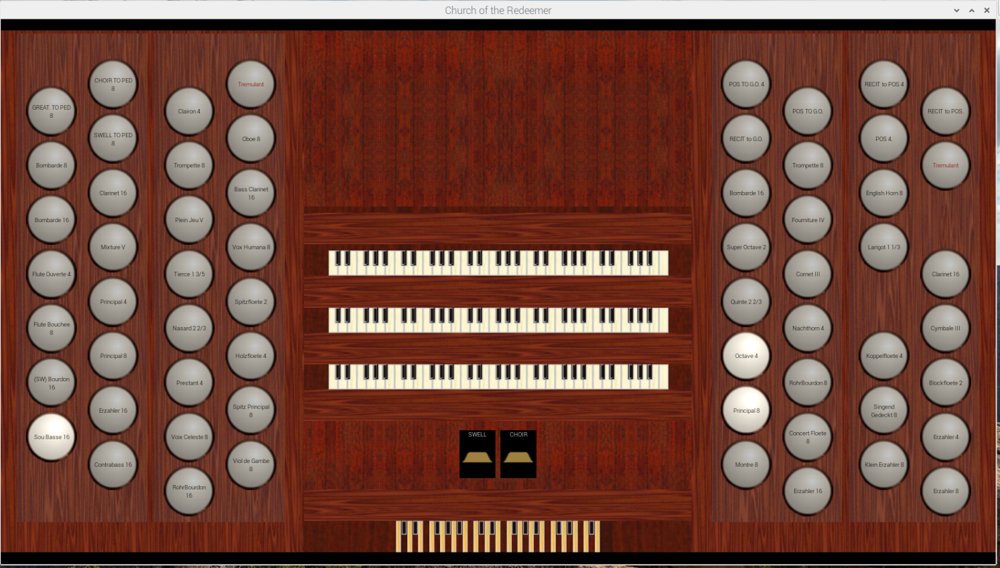
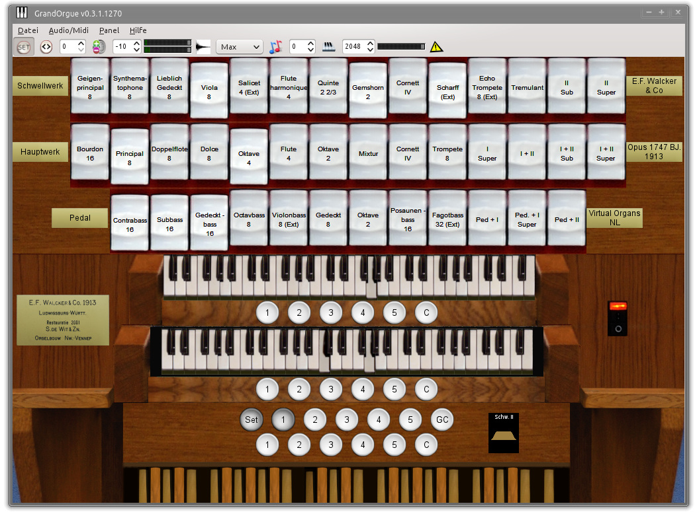

To create an organ is a process that requires some planning. This section begins with some recommendations for how to plan and implement your organ, then links to other pages describing the processes involved in using GOODF to create a complete .organ file
You will probably want to use GOODF to create GrandOrgue versions of existing Hauptwerk organs, or to combine sample sets from multiple Hauptwerk or GrandOrgue sample sets into a custom organ. In that case you will have a directory structure for the samples and graphical elements already in place. Spend time understanding the structure of the existing organ(s). If you are starting with your own samples, you will want to create your directory structure to conform to the GOODF standards: Each rank has an attack directory, and includes release sample sub-directories relXXXXX. If there are separate tremmed samples their will also be a trem subdirectory with its own attack samples and relXXXXX sub-directories. (XXXXX refers to the time in milliseconds that is the maximum time a key is held down to use that release subdirectory.) Of Course, it is possible to take pre-existing sample sets with different directory structures and re-create the preferred structure by renaming directories and/or creating symbolic links, according to the features of your chosen operating system.
When planning your Organ you will want to think about how to use your available pipe samples. For example, if you want a large organ operating on a computer with limited RAM, you may want to consider multiplexing and duplexing (making the same pipe samples available at multiple pitches and on multiple keyboards. If you are doing this you need to recognize that by sharing ranks or borrowing pipes, you give up the ability to adjust pitch or volume separately. If you change these in the Rank where the samples are loaded, they will also change in every other stop that uses or borrows from that rank.
You can have more samples than there are keys on a keyboard, so that when super or sub octave couplers are used these extra samples will allow notes to be heard over the entire keyboard rant
If, on the other hand, you have lots of memory and want flexibility, it is possible to load the same samples into multiple ranks. For More information see Working with samples, which also includes instructions for creating ranks.
Next think about which ranks should be associated with which windchestgroup. Since Tremulants and enclosures are applied to a specific windchestgroup, the ranks which use the tremulant and the enclosure need to be on that windchestgroup. For example, on a simple two manual Organ, there may be two windchestgroups, where the Great and Pedal rank are on one windchestgroup without an enclosure and tremulant, but the Swell ranks are on a separate windchestgroup with both. You can make the windchestgroups more complex if, for example, you want some or all of the pedal ranks to be in enclosures, but not influenced by a tremulant. Finally, added windchestgroups with multiple enclosures per windchestgroup may be used to allow adjustment of the volume of surround sound samples, even if you choose in GrandOrgue only to have stereo output
For more information see Using Windchests
Next think about how many manuals you will need, and how you want to configure them. You can define names for them, and change the number of keys. For example, many samples sets are created for 54 note keyboards. Manuals can have more logical keys than accessible keys so that Ranks with more pipes than keyboard keys will sound their extra pipes when a manual super (GT to GT 4) or Sub (GT to GT 16) intramanual coupler is activated.
For More information on defining manuals see the help for the manual object.
Switches are elements used to perform combinational logic. Switches Can appear on the GUI looking like stops and are referenced by a manual. Two examples will illustrate the use of switches:
Suppose you want to implement a feature such as having a single drawstop to turn all the reed stops on on one or more manuals. Assume the reeds in Question, are a Bombarde 16, Trumpet 8, Clairon4, and Zink2. You would create the following objects:
Stops for the four reeds above
A switch for each of the four reeds labeled with the Name of the reed stop
A switch labeled REEDS ON.
All the switches have their Function (pulldown below the name) left at the default INPUT. This indicates that the value of the Switch comes from control of its GUI element.
You would then create GUI elements for the five switches you have created, and reference them from the manual with which they are associated.
For each of the four reed stops, you do not create GUI elements, and you set them up with the Function equal to And. For the Bombarde 16 stop, for example, you Select Reference the Bombarde 16 switch and the REEDS ON switch. Thereafter the Bombarde 16 stop will become active only when the Bombarde 16 switch AND the REEDS ON Switch GUI elements are both active:
You may want to create a switch to activate multiple stops. For example you may have a stop which plays a rank of pipes, and another stop that plays a percussive noise to simulate the mechanical sound of a drawstop being drawn and a third stop that plays a mechanical sound when the drawstop is de-activated. A Switch with a GUI element may be used to activate both of these stops . The stop which plays a rank references this switch with its function set to OR or AND. A single pipe stop with the Drawstop drawn noise also references the switch with the function set to OR or AND. The stop which plays the noise of the drawstop being de-activated references the same switch with its function set to not. (It appears that stops with only one pipe, and no releases do not need a note on a keyboard to be pressed to activate a sound)
Finally consider the Graphical user interface you with to implement. This depends on a lot of factors, like how you intend to use your organ, if you might want to share it with others, and what resources you have to make a visually appealing interface. You can start with a simple GUI until you get your organ working, and then consider making it progressively more sophisticated. For more information see Creating Your Organ GUI.
GUIs can be made quickly and simply by using the images that come built into the GrandOrgue software. This may be all that is necessary if you plan to use your organ predominantly from an organ console that sends MIDI messages for key-presses, stop activation, expression pedals, and combination pistons. In that case the GUI does not need to be visually appealing, and can even skip things like couplers and combination setting buttons, since GrandOrgue already comes with auxiliary panels with these elements defined. An example using the built in images is:
Notice that the Pedals and keys are very simple, but functional (you can press on them with your mouse and activate a note.) There are choices for the color and layout of the keyboards and pedals, and the graphic used for stop knobs and buttons. There are built in labels to label stop columns, and simple or completely free form means of positioning them. Even if you choose the built in images, it is still possible to add non-functioning images such as a picture of the organ facade, or of a maker’s label
If you are planning to use the GUI to operate your organ, you can still use the built in images, but you might, for example, create new panels for the left and right stop jams for use with two touch screen monitors.
At the other end of complexity is a GUI with completely customize-able elements. You might choose this if the organ you are creating comes with images for keys, stops, couplers. It is fairly simple to use custom images for stops, couplers, and buttons, but for custom keyboards, the individual key graphics need to be precisely placed. An example is shown below. Note that this example even includes custom sliders in place of expression pedals.
